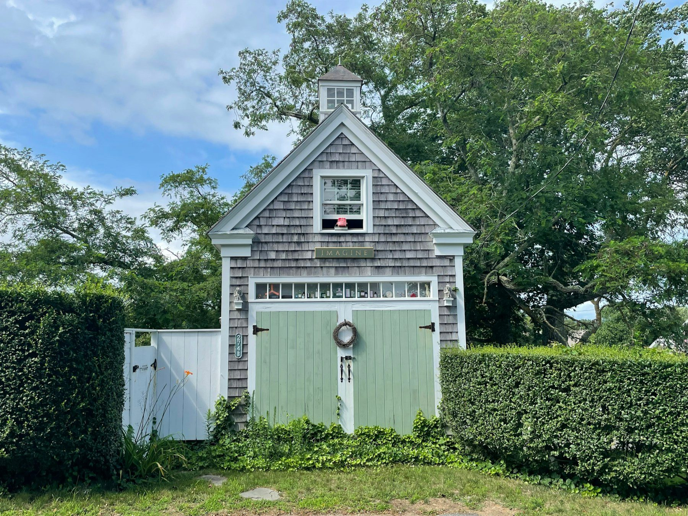

Open house · Sat Oct 17, 1–3
Open house · Sat Oct 17, 1–3Shrewsbury · Sample
31 Maple Avenue
$749,0001932
- 4 bd
- 2.5 ba
- 2,410 sq ft
- 0.38 ac
Colonial Revival, 1932: a fanlight gable, a heated sunroom and the original built-ins in the dining room.
31 Maple Avenue, Shrewsbury
Worcester County · Town · East of Worcester
Lake Quinsigamond on one side, Route 9 through the middle, and the town center on the hill between them.
Sample town pageFig. 01 — A lakeside house in October. Sample photograph, Dominik Winter / Unsplash; it stands in for Lake Quinsigamond and was not taken in Shrewsbury.
Sample copy in the team's voice. Before launch the team writes and fact-checks this page; walking times, business names and market figures come from their own notes and MLS PIN data.
Shrewsbury begins at the water. Lake Quinsigamond runs north to south along the town's western edge, about four miles of it, shared with Worcester across the way. In spring the college crews race on it; in summer the shore is docks and screened porches; in winter it goes quiet and gray.
Route 9 crosses the lake on a long bridge and becomes the town's working street: groceries, hardware, the bank, the places you go on a Saturday. Up the hill from it, Main Street keeps the older town: the common, the library, white churches and houses that were here before the highway.
Most of the housing came after the war, in colonials and Capes on quarter-acre lots, with older farmhouses along the original roads and lake cottages that have been winterized one at a time. Commuters use Route 9, Route 20 and I-290, and the commuter rail stops just over the line in Grafton and Westborough.
What the town page covers. Each slot is written by the team.
Postwar colonials and Capes, original farmhouses on the old roads, lake cottages turned year-round, condominiums near Route 9.
A photo essay of the buildings that define the place, below.
Live listings from the IDX feed, every brokerage credited. Two samples below.
The lake, the main roads and the town center, styled to the brand, with a list of every place on it.
Named places with walking or driving times from the center.
[Local businesses the team actually uses, with one line each.]
Median price, days on market and inventory, refreshed monthly from MLS data.
Articles tagged to Shrewsbury.
Sample listings. Search Shrewsbury
Open house · Sat Oct 17, 1–3Shrewsbury · Sample
Colonial Revival, 1932: a fanlight gable, a heated sunroom and the original built-ins in the dining room.
31 Maple Avenue, Shrewsbury
Shrewsbury · Sample
An 1838 side-gabled farmhouse: a center portico, two chimneys and a split-rail fence along the road.
18 Church Road, ShrewsburyA photo essay. These four are New England samples standing in for the team's own Shrewsbury photographs.




Illustrative, not to scale. The list beside it carries the same places in words.
Times are placeholders until the team walks them.
Refreshed monthly from MLS PIN once the feed is connected. No figures are shown until they're real.
[One paragraph from the team each month: what moved, what didn't, and what it means for someone buying or selling here this season.]

Sills, chimneys, wiring, oil tanks and septic: the questions that are cheaper to ask before an offer than after it.

What the septic inspection checks, who orders it, and what happens to a sale when a system fails.

Heat, ice dams, storm windows and the maintenance calendar nobody hands you at the closing.
We'll send a written range with the sales we used and what would move it, within [turnaround to confirm]. No obligation, and no automated estimate.